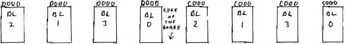

Micropower |
Volume 2 · Number 4 · September 1982 |
| Page 11 of 36 |
|---|
My school hay three Languages for the Nascom, Nascom Pascal, Forth and Nascom BASIC. We use a 6K assembler, a 4K Disassembler/debug, a micro-cassette monitor and our own control programs to make the use of these facilities as easy as possible. We would like to add a word processor, printer routines and perhaps Pilot. It looked as if in the end we would require 2 EPROM boards per machine. Then Mr. D. A. Boyd wrote his article on using 4K 2732 EPROMS. This would half solve our problems so I converted our EPROM burner and fitted Mr. Boyd’s conversion. Fortunately it did not work. One pin was wrongly labelled on the diagrams. I say fortunately because it meant I had to work out how the circuit actually worked. In the process I realised that it really is easy to double up and convert the Nascom 2 plus RAM B board into a 44K RAM and 64K EPROM machine. It costs about £4 to do the job and saves the expense of two EPROM cards and two edge Connectors. The disadvantage is that you only have 44k of RAM available on a standard Nascom 2 whereas EPROM board owners gloat unceasingly over their 64k.
The principle depends on the 2732 having, in effect, two chip select pins, /OE and /CE, pins 20 and 18. The Nascom 2 selects the 8 on-board memory sockets using the /CE signals generated by IC 46. Pins 3 and 13 of IC 46 can be used as a binary input giving 0 to 3 to select 4 banks of 2 sockets in the following manner.
IC 46 needs lows on pins 2 and 15 for this selection to work, and link switch 1,8 set to 8K. The logic lows are provided by the /XROM signal from the control board. Now is the time to study the circuit diagram with this article with the Nascom Memory circuit to hand
It should be sufficient to explain the three output signals. in detail leaving space far a few extra comments at the end.
| 1) | /XROM | When any address outside the EPROM block at C000-FFFF is selected, gate 3, the ‘AND’ gate, ensures that /XROM is inactive high. RAM is not disabled and IC 46 is not enabled for bank select. When an EPROM address is selected, /XROM is active low, RAM at that address is disabled while IC 46 is enabled for both banks A and B. |
| Page 11 of 36 |
|---|